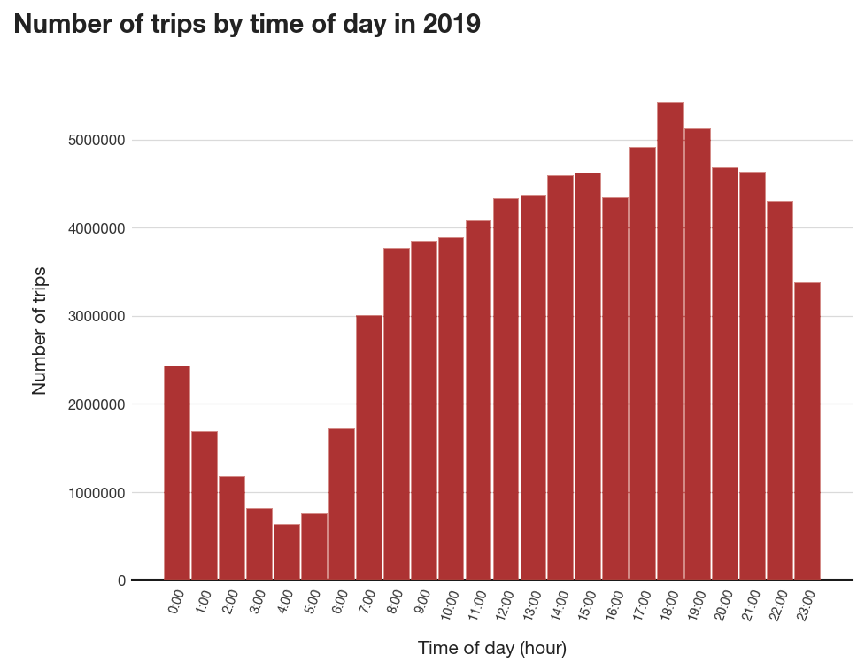
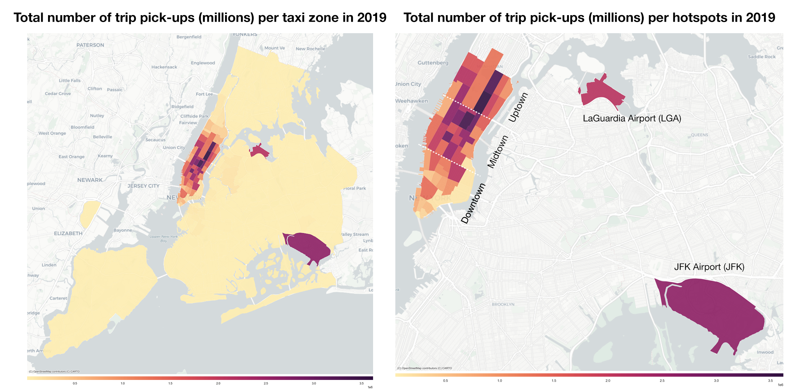
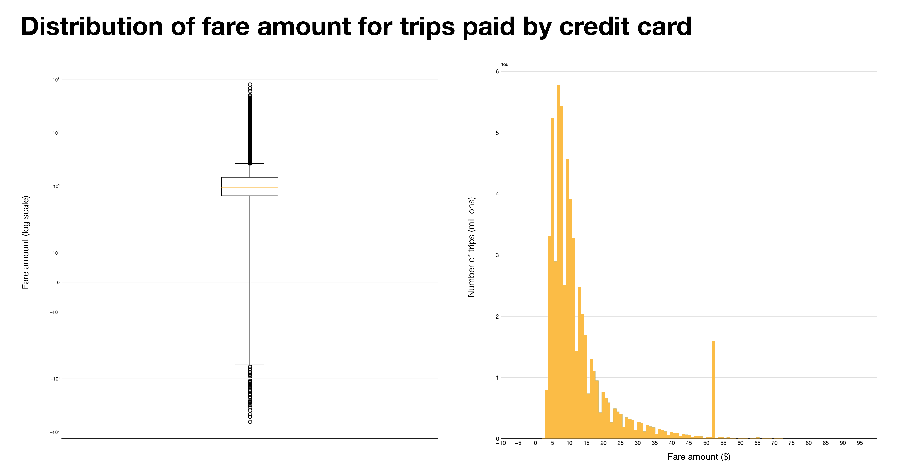
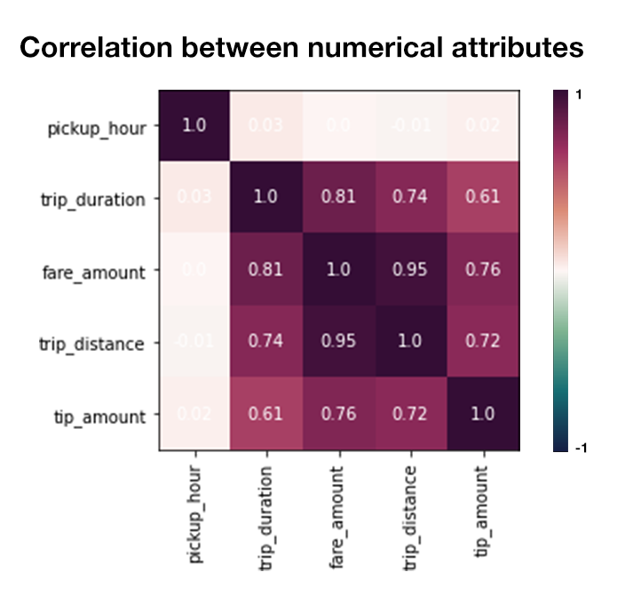
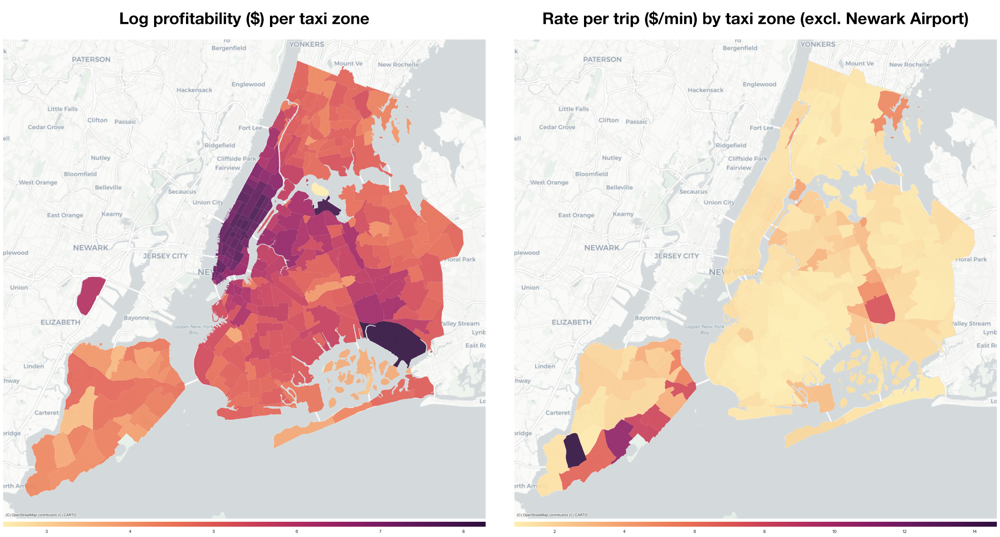
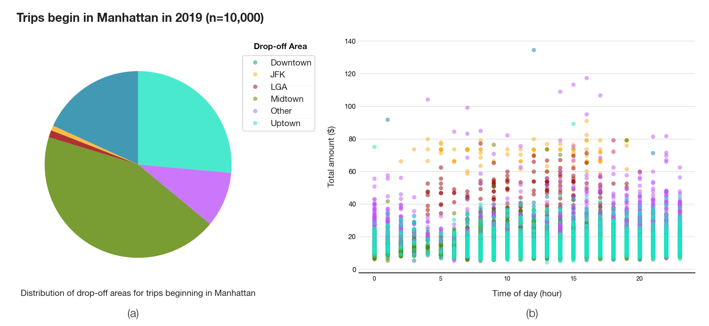
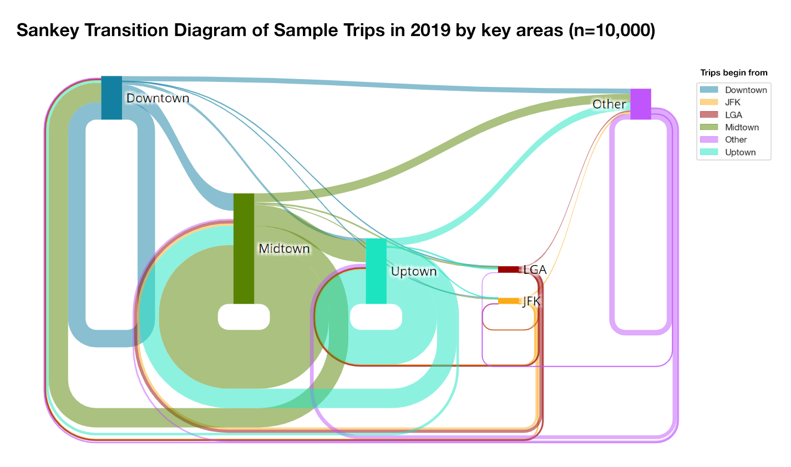
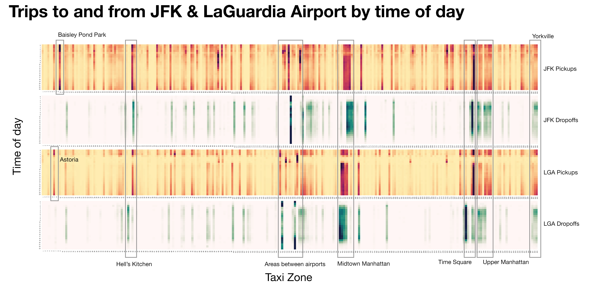
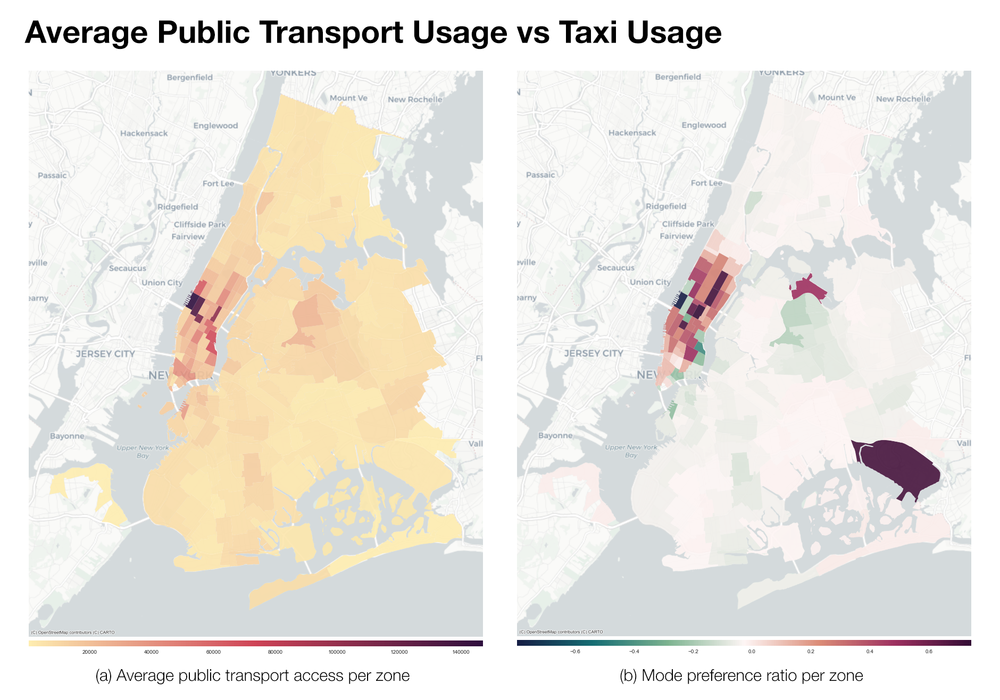
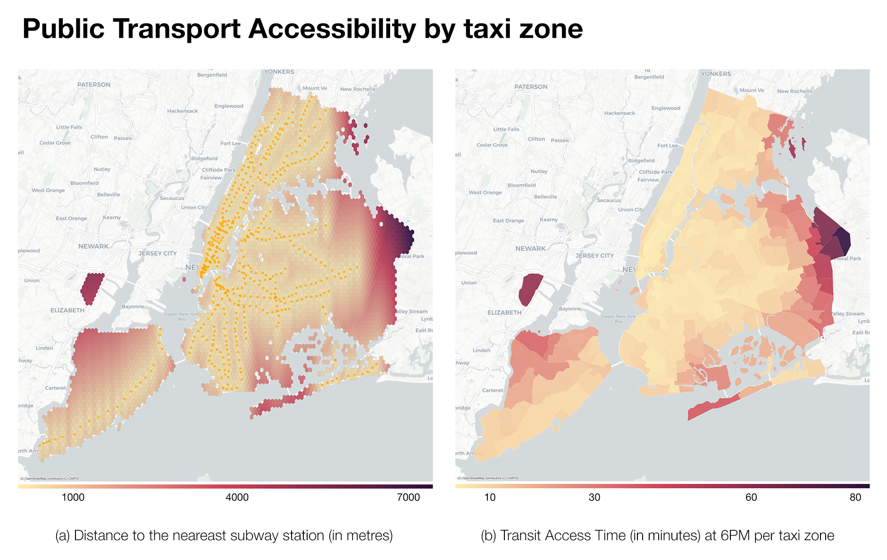

1.4 Exploratory Data Analysis
1.4.1 Overall trends of taxi trips

Figure 1. Total number of trips by time of day
The total distribution of taxi trips taken by hour of day is summarized in Figure 1. The trend shown in the histogram is congruent with past findings, wherein daily trip demand rises gradually starting from 6AM, peaks during the afternoon rush hour (from 5PM to 7PM) and then gradually decreases during the night. The differences in the afternoon peak-hour demand and the morning peak-hour demand can be attributed to weekend night-outs, as more people prefer to hail private taxi rides than public transport for this purpose. For location factor, total trip counts are projected to the NYC map based on pick-up zones (Figure 2). Three hotspot areas, namely Manhattan, LaGuardia Airport and JFK Airport, contribute significantly to the yellow taxi demand of NYC as expected. Affluent neighborhoods such as Park Avenue and Maddison Avenue (Upper East side) as well as tourist attraction areas like Time Square (Midtown) recorded the greatest number of pick-ups, followed closely by JFK and LaGuardia Airport pick-ups.

Figure 2
Approximately 72.1% of the trips were paid by credit card (see Table 1). Among these trips, the fare amount (excluding any tips or fees) is typically between $5 and $20, except for a significant number of trips around the $52 mark (Figure 3). These trips are mostly airport pick-ups and drop-offs, which charge a flat rate of $52 per trip between JFK and Manhattan 15. A number of trips also recorded negative fare amount, which initially may seem invalid since money can only be positive. However, according to the Data Dictionary, a plausible explanation for these cases may be that there was a Dispute during the transaction and the driver ended up refunding the passenger. As there are only a few of these trips (i.e., mostly outliers according to the log box plot) and considering that this is not a rare event in the taxi industry, they will not be removed for analytical purposes.

Figure 3. (Left) Box plot on log scale (Right) 1000-bin histogram
The correlation matrix in Figure 4 shows that among the other numerical attributes, there is a strong positive correlation among trip duration, trip distance and fare amount. Although it is worth noting that tip amount has the strongest correlation with fare amount, which is expected from the American tipping culture, the profitability analysis will use the total amount paid as the variable for revenue as it encompasses both tip and base fare amount. The trip duration also shows a strong correlation with the fare amount, as the TLC fares are adjusted for speed to compensate drivers who are stuck in congestion 16.

Figure 4
The correlation matrix also shows that pickup hour is uncorrelated with the other variables, which are used to evaluate the zone profitability as per Equation 1. This supports the assumption that zone profitability does not account for hourly demands, and thus these two areas will be analysed separately.
Profitability metric
The “Rate per trip” measure (Equation 2) is the equivalent of hourly wage for taxi driver. Unlike hourly wage, which is a fixed rate, “Rate per trip” takes into account the efficiency of the driver; meaning that for the same trip distance, faster drivers will earn more than slower drivers. Interestingly, the rate per trip distribution (Figure 4 right) is inversely proportionate to taxi demand by zones shown earlier in Figure 2. One explanation is that trips beginning in the non-central areas are usually longer than those that circulate Manhattan, consequently netting a larger amount of total fare. Furthermore, the duration of these trips may also be shorter than trips originated from hotspots areas, as they may go on fast tollways and are thus less likely to experience traffic congestion.

Figure 5. Profitability by pick-up zones
However, this does not mean that taxi drivers should expect higher profitability from picking up passengers in these areas, as “rate per trip” does not take into account the frequency of trips (i.e., taxi demand) in each zone. The “zone profitability” (Equation 1) combines both information in one metric and is visualized on Figure 4 (left). By adjusting for zone demand, zones with high “rate per trip” are no longer desirable as they are far less frequent than trips from the three hotspot areas. Areas between the two airports are also moderately profitable, suggesting that aside from the typical Airport – Manhattan routes, taxi drivers can also look forward to profit made from trips between LGA – JFK.
1.4.2 Hotspot Analysis
From our initial analysis and zone profitability visualization, it is clear that roaming around the hotspot areas, namely Manhattan and the two Airports, has a distinct advantage over seeking for pickups in non-central areas. The sheer taxi demand guarantees that a strategy focusing on targeting pickups in these areas is profitable in the long run. The following analysis further breaks down the characteristics of trips that are picked-up in these areas according to time of the day.
Manhattan

Figure 6
A sample of 10,000 trips that were picked-up in Manhattan were randomly selected. Figure 6a shows that nearly 80% of the trips originated in Manhattan also finish in Manhattan, and only a small number of those trips are towards the airports. The Sankey Transition Diagram (Figure 7) further breaks down the flow of these trips by drop-off locations. For each of the three sections of Manhattan, nearly half of the trips begin and end within the section, suggesting that the majority of taxi trips are short haul and is consistent with the fare amount distribution identified earlier. By far, Midtown Manhattan records the highest taxi demand, and inner city drivers can be reassured that there is a relatively low chance that the drop-off location of their trip falls outside the highly profitable zones (in which case they may have to undesirably drive back to the profitable zones to roam for new pick-ups, incurring a logistical cost).

Figure 7. Transition diagram depicting the proportion drop-off locations for trips beginning in each of the 6 areas. The size of the column is proportional to the number of trips beginning in that particular area.
However, trips that take a driver out of a profitable zone generally net a higher total amount in returns (Figure 6b) albeit a high variance. These trips are most lucrative and common around the graveyard hours (10PM – 2AM), where public transport is more infrequent. The same scatterplot also gleans at the profitability of trips towards JFK Airport, which is generally much higher than the $52 flat rate due to high tip amount (between $60 and $80 in total). In comparison, trips towards LaGuardia Airport cost around $20 less. Trips towards both airports from Manhattan are notably only during working hours (5AM – 5PM).
Airport
Figure 8 shows the distribution heatmap of trips to and from the two major airports, broken down by time of the day and the origin or destination zones. While the drop-off pattern is similar for both airport, which is consistent with the findings from the scatterplot earlier, there is a clear cooldown period for pick-ups from LGA between 2AM and 5AM in contrast to JFK Airport where there is consistent pick-ups at all hours of the day. This suggests that targeting late trips to the airports are not favorable, as there is a high chance of not finding a potential pick-up after completing these trips. Although trips towards the airports from Manhattan are not very frequent as previously shown, they still account for most trips concluding at the airports, especially if the pick-up locations are from areas with high tourist density such as Midtown, Time Square and Upper Manhattan. Additionally, Yorkville and Hell’s Kitchen are the two residential neighborhoods with frequent taxi trips to and from the airports, as they are home to affluent young people with travelling as part of their working lives. The taxi zones between the airports also see an above-average demand throughout the day, supporting the findings from the log profitability choropleth map.

Figure 8. Each stripe is a trip count distribution heatmap, with the horizontal axis being the 131 taxi zones in ascending order from left to right, and the vertical axis being the time of day starting at 0AM from the top.
1.4.3 Effect of Public Transport Access
Preferred mode of transportation
Figure 9a shows the daily average number of public transport entries as recorded by the turnstile usage data. Although non-central areas with low taxi usage were expected to see a higher public transport usage than the hotspots areas, it is not too surprising to see that the majority of trips on public transport still occurs in Manhattan. Most notably, Hell’s Kitchen attracts the highest number of commuters, while East Village also sees an average of more than 40000 public transport users a day. Consequently, the mode preference ratio is negative for these areas, suggesting a tendency towards public transportation, as compared to other Manhattan areas where passengers prefer taxi over subway (Figure 9b). Despite this, the numbers of taxi trips hailed from these two areas remain as high as the rest of Manhattan (Figure 2), which indicates that there is little competition between the subway and taxi industry in Manhattan as there are sufficiently high demands for both modes of transportation to cater for passengers. On the other hand, there is no subway connection to the two airports, which effectively limits potential taxi competitors to just personal vehicles and other share-riding services. Moreover, the lack of any clear mode preference in the non-central areas, coupled with abovementioned relatively low usage in both public transport and yellow taxis, suggests that residents in these areas may travel in their own cars. Further investigation into these alternative modes of transportation would benefit a big picture understanding of the transportation habits of NYC residents.

Figure 9
Transport Access Time (TAT)
The TAT measure offers a possible explanation to why residents would prefer public transport over taxis, as a zone with a low TAT means that public transport is more accessible and is a cheaper alternative to hailing a taxi. While TAT correlates strongly with the distance to the nearest station (Figure 10), areas with low TAT still overlaps with areas with a higher preference for taxis, especially in Manhattan. This suggests that accessibility does not play an important role in deciding the mode of transportation to use, and that most New Yorkers still prefer taxis for their convenience and higher privacy.

Figure 10
Taxi car and van service. (2020). Retrieved 30 August 2020, from https://www.jfkairport.com/to-from-airport/taxi-car-and-van-service↩︎
Taxi Fare - TLC. (2020). Retrieved 30 August 2020, from https://www1.nyc.gov/site/tlc/passengers/taxi-fare.page↩︎